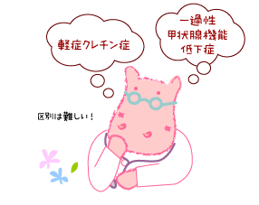

|
Lesson17 : 潜在性甲状腺機能低下症（軽症クレチン症）
17-1 軽症クレチン症とは
クレチン症には、早期に治療をしないと知能障害を残す「重症クレチン症」以外に、治療開始が多少遅れても、目立った知能障害や成長障害を起こさない「軽症クレチン症」があります。
実際はどこからどこまでが軽症で、どこからが中等症、そしてどこからが重症と、区別がつけられるわけではありませんが、軽症と重症については、ある程度スクリーニング・データや精密検査の時のデータで区別がつけられます。
註：ここでは「軽症クレチン症」とういう言葉を使っていますが、改めて説明しておきます。
Cretinism「クレチン症」はあくまでもヨード欠乏症による先天性（一過性）甲状腺機能低下症ですが、日本では甲状腺自体に問題のある先天性原発性永続性甲状腺機能低下症を慣用的に「クレチン症」と呼んできたため、甲状腺機能低下症の程度により重症や軽症に区分した場合、重症クレチン症や軽症クレチン症という言葉も慣用的に使われています。
お子さんの病気のことを説明させて頂くときに、「先天性原発性永続性甲状腺機能低下症」と繰り返すより、短い言葉で使いやすいため「クレチン症」と使ってしまうわけですが、元の意味をしっかりご理解頂きたいと思います。
ここで問題となるのは、一時的にTSH値が上昇する「一過性甲状腺機能低下症」や「一過性高TSH血症」と「軽症クレチン症」が、診療を始めたときには簡単には区別がつかないということです。
重症クレチン症は早期治療されないと、知能障害の原因となりますので、診断がつくまで治療しない、ということはできません。そのため、ある程度の条件がそろったら、重度の一過性甲状腺機能低下症と区別がつかなくても、治療してしまうことが勧められています。
しかし、軽度の甲状腺機能異常の場合、すなわち甲状腺刺激ホルモン値（TSH）だけが軽度上昇し、甲状腺ホルモン値（FT3，FT4）が正常範囲の場合は、治療をしなくても何も問題なく、結局「正常」だったということになるかもしれないわけです。
TSH値だけが軽度上昇し、甲状腺ホルモン値（FT3，FT4）が正常範囲の場合、潜在性甲状腺機能低下症と言われます。
この状態が続く場合は、「軽症クレチン症」（＝永続性潜在性甲状腺機能低下症）であると考えます。このまま自然に経過をみて、数カ月以内に正常化してしまうなら、軽度の一過性甲状腺機能低下症あるいは一過性高TSH血症と呼ばれる状態です。
しかし、これらの区別は難しいのが実状で、専門家の間でも、治療方針などが明確に決まっていません。
そのため、軽度の甲状腺機能異常を全て治療してしまうことがおこります。そうすると、甲状腺機能は正常化しますが、治療で正常になったのか、治療しなくても自然に正常化したのか、わからなくなります。
「軽症クレチン症」は、満6歳頃に病型診断を行うと、ほとんどのお子さんがまだ軽度の甲状腺機能異常症（潜在性甲状腺機能低下症）を示し、異所性甲状腺やホルモン合成障害がその原因だった場合が多く報告されています。 17-2 甲状腺機能の再評価についてこのように、「軽症クレチン症」と「一過性甲状腺機能低下症」の区別は難しいことが多いので、小児内分泌専門に診察を受け、必要なら2～3歳過ぎくらいに、一時的に治療を中断（＊１）してみることも必要です。 |
 |
＊１：この一時的に治療を中断して、甲状腺機能低下症が永続性か一過性かを区別することを、甲状腺機能の「再評価（re-evaluation）」と呼んでいます。「軽症クレチン症」と「一過性甲状腺機能低下症」の区別がつかない場合は、重症クレチン症と同様にチラーヂンＳによる治療を優先し、一時的な治療中断が脳の発達に悪影響を与えない時期と考えられている、2～3歳過ぎに再評価を行うことが勧められます。
「再評価」の方法には次の二つの方法があります。
１）チラーヂンＳを徐々に減らす方法
- チラーヂンＳを服用量の半分に減らし、3～4週間後に血液検査（甲状腺機能検査）を行う。
- TSHが4～5mIU/L未満であれば、さらにチラーヂンＳを服用量の半分に減らし、3～4週間後に血液検査（甲状腺機能検査）を行う。
- チラーヂンＳが5μｇ／日でもTSHが４～５mIU/L未満であれば、治療を中断する。
- 3～4週間後のTSHがやはり4～5mIU/L未満であれば、治療中断を継続し、その後、3か月毎の血液検査（甲状腺機能検査）を治療中断後、１年間続ける。１年後も甲状腺機能正常であれば、生後5、6歳時まで年に１回甲状腺機能検査を継続する。
- この間、TSHが4～5mIU/L以上に上昇するなら、潜在性甲状腺機能低下症が持続していると考え、元の量でのチラーヂンＳ治療を再開し、生後5、6歳時の「病型診断」まで治療を継続する。
２）T3 withdrawal test
- チラーヂンＳの1／4量のチロナミン（トリヨードサイロニン）に3～4週間置き換える。
- 例えばチラーヂンＳの１日量が20μｇであれば、チロナミン５μｇ／日（分３）に置き換える。
- その後、7～10日間治療を中断し、TRH試験を行い、検査結果が判明するまで元の量でのチラーヂンＳ治療を再開しておく。
- TRH試験でのTSH頂値が30～35mIU/L以上であれば、潜在性甲状腺機能低下症が持続していると考え、元の量のチラーヂンＳ治療を再開し、生後5、6歳時の「病型診断」まで治療を継続する。
- TSH頂値が25mIU/L未満であれば甲状腺機能正常と判定し、治療を中断する。その後、3か月毎の血液検査（甲状腺機能検査）を治療中断後、1年間続ける。1年後も甲状腺機能正常であれば、生後5、6歳時まで年に1回甲状腺機能検査を継続する。
その後のことは、「病型診断」Lesson24の項目参照。